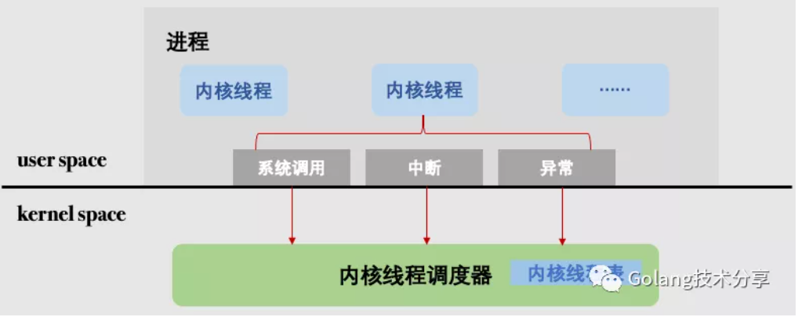
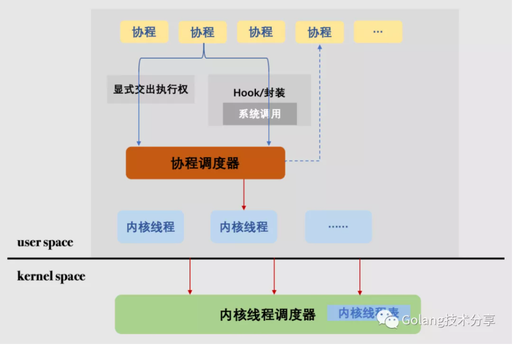
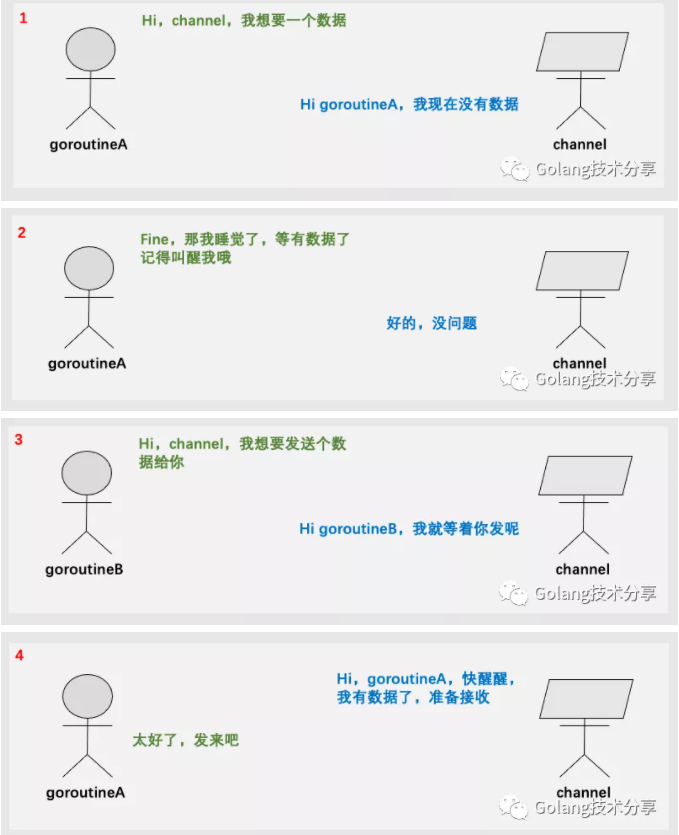
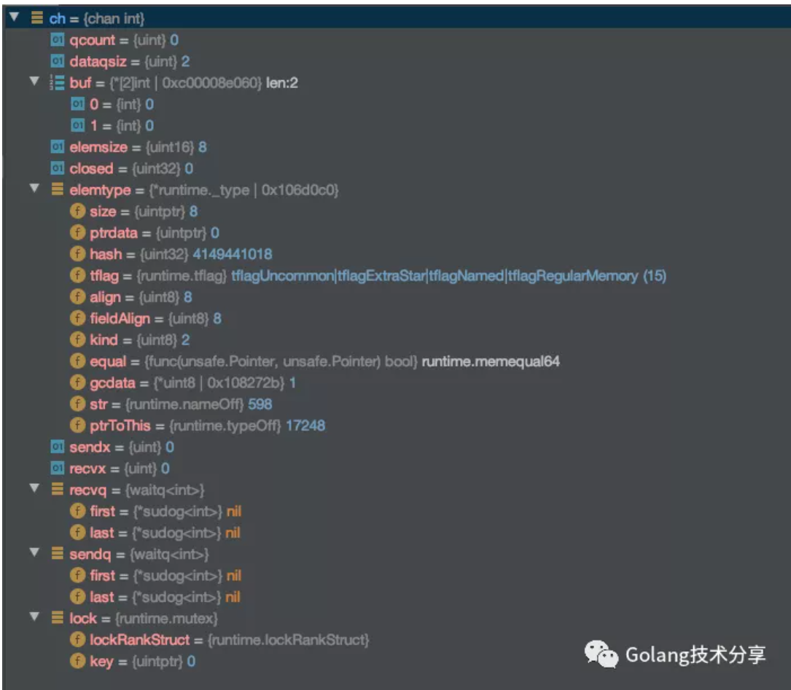
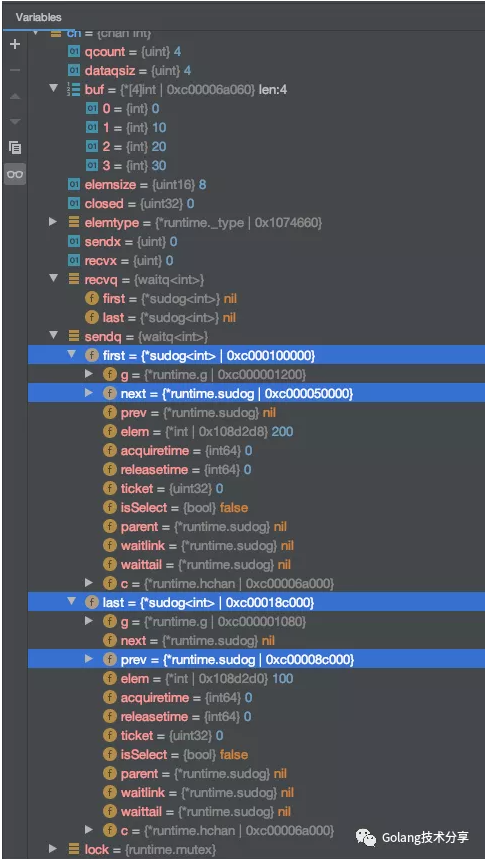
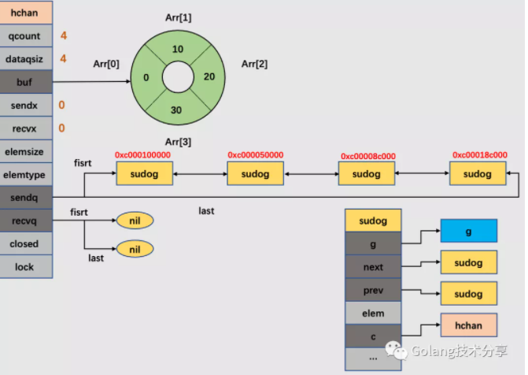
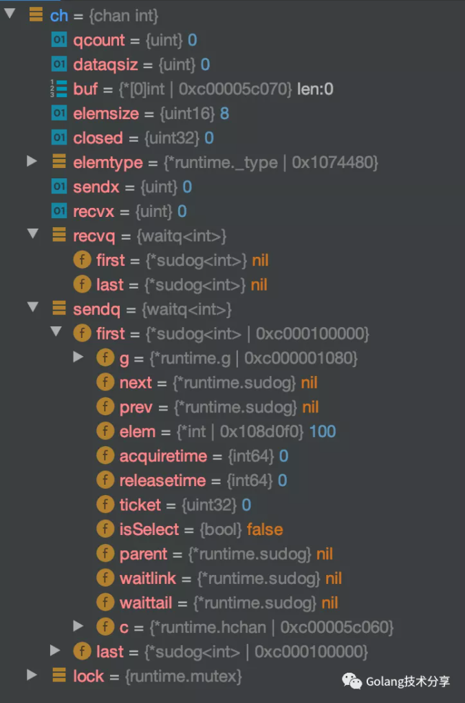
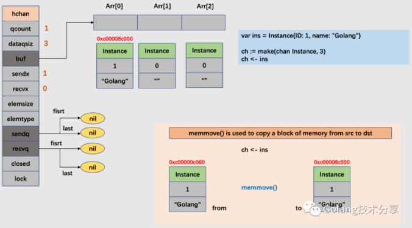
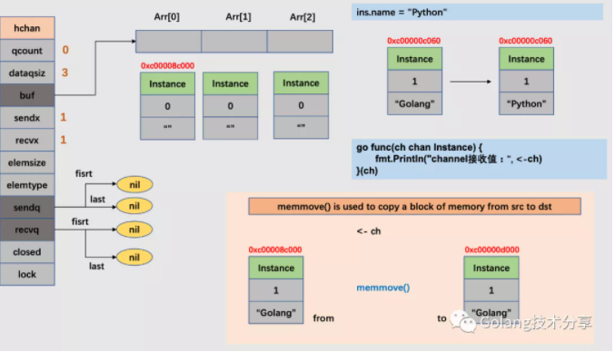

在Go中，要理解channel，首先需要认识goroutine。
为什么会有goroutine
现代操作系统中为我们提供了三种基本的构造并发程序的方法：多进程、I/O多路复用和多线程。其中最简单的构造方式当属多进程，但是多进程的并发程序，由于对进程控制和进程间通信开销巨大，这样的并发方式往往会很慢。
因此，操作系统提供了更小粒度的运行单元：线程（确切叫法是内核线程）。它是一种运行在进程上下文中的逻辑流，线程之间通过操作系统来调度，其调度模型如下图所示。

多线程的并发方式，相较于多进程而言要快得多。但是由于线程上下文切换总是不可避免的陷入内核态，它的开销依然较大。那么有没有不必陷入内核态的运行载体呢？有，用户级线程。用户级线程的切换由用户程序自己控制，不需要内核干涉，因此少了进出内核态的消耗。

这里的用户级线程就是协程（coroutine），它们的切换由运行时系统来统一调度管理，内核态并不知道它的存在。协程是抽象于内核线程之上的对象，一个内核线程可以对应多个协程。但最终的系统调用仍然需要内核线程来完成。注意，线程的调度是操作系统来管理，是一种抢占式调度。而协程不同，协程之间需要合作，会主动交出执行权，是一种协作式调度，这也是为何被称为协程的原因。
Go天生在语言层面支持了协程，即我们常说的goroutine。Go的runtime系统实现的是一种M:N调度模型，通过GMP对象来描述，其中G代表的就是协程，M是线程，P是调度上下文。在Go程序中，一个goroutine就代表着一个最小用户代码执行流，它们也是并发流的最小单元。
channel的存在定位
从内存的角度而言，并发模型只分两种：基于共享内存和基于消息通信（内存拷贝）。在Go中，两种并发模型的同步原语均有提供：sync.和atomic.代表的就是基于共享内存；channel代表的就是基于消息通信。而Go提倡后者，它包括三大元素：goroutine（执行体），channel（通信），select（协调）。
Do not communicate by sharing memory; instead, share memory by communicating.
在Go中通过goroutine+channel的方式，可以简单、高效地解决并发问题，channel就是goroutine之间的数据桥梁。
Concurrency is the key to designing high performance network services. Go’s concurrency primitives (goroutines and channels) provide a simple and efficient means of expressing concurrent execution.
以下是一个简单的channel使用示例代码。
1 | 1func goroutineA(ch <-chan int) { |
上述过程趣解图如下

channel源码解析
channel源码位于src/go/runtime/chan.go。本章内容分为两部分：channel内部结构和channel操作。
1. channel内部结构
1 | 1ch := make(chan int,2) |
对于以上channel的申明语句，我们可以在程序中加入断点，得到ch的信息如下。

很好，看起来非常的清晰。但是，这些信息代表的是什么含义呢？接下来，我们先看几个重要的结构体。
- hchan
当我们通过make(chan Type, size)生成channel时，在runtime系统中，生成的是一个hchan结构体对象。源码位于src/runtime/chan.go
1 | 1type hchan struct { |
- waitq
waitq用于表达处于阻塞状态的goroutines链表信息，first指向链头goroutine，last指向链尾goroutine。
1 | 1type waitq struct { |
- sudug
sudog代表的就是一个处于等待列表中的goroutine对象，源码位于src/runtime/runtime2.go
1 | 1type sudog struct { |
为了更好理解hchan结构体，我们将通过以下代码来理解hchan中的字段含义。
1 | 1package main |
打开代码调试功能，将程序运行至断点time.Sleep(time.Second)处，此时得到的chan信息如下。

在该channel中，通过make(chan int, 4)定义的channel大小为4，即dataqsiz的值为4。同时由于循环队列中已经添加了4个元素，所以qcount值也为4。此时，有4个goroutine（A-D）想发送数据给channel，但是由于存放数据的循环队列已满，所以只能进入发送等待列表，即sendq。同时要注意到，此时的发送和接收索引值均为0，即下一次接收数据的goroutine会从循环队列的第一个元素拿，发送数据的goroutine会发送到循环队列的第一个位置。
上述hchan结构可视化图解如下

2. channel操作
将channel操作分为四部分：创建、发送、接收和关闭。
本文的参考Go版本为1.15.2。其channel的创建实现代码位于src/go/runtime/chan.go的makechan方法。
1 | 1func makechan(t *chantype, size int) *hchan { |
可以看到，makechan方法主要就是检查传送元素的合法性，并为hchan分配内存，初始化相关参数，包括对锁的初始化。
channel的发送实现代码位于src/go/runtime/chan.go的chansend方法。发送过程，存在以下几种情况。
a. 当发送的channel为nil
1 | 1if c == nil { |
往一个nil的channel中发送数据时，调用gopark函数将当前执行的goroutine从running态转入waiting态。
b. 往已关闭的channel中发送数据
1 | 1 if c.closed != 0 { |
如果向已关闭的channel中发送数据，会引发panic。
c. 如果已经有阻塞的接收goroutines（即recvq中指向非空），那么数据将被直接发送给接收goroutine
1 | 1if sg := c.recvq.dequeue(); sg != nil { |
该逻辑的实现代码在send方法和sendDirect中。
1 | 1func send(c *hchan, sg *sudog, ep unsafe.Pointer, unlockf func(), skip int) { |
其中，memmove我们已经在源码系列中遇到多次了，它的目的是将内存中src的内容拷贝至dst中去。另外，注意到goready(gp, skip+1)这句代码，它会使得之前在接收等待队列中的第一个goroutine的状态变为runnable，这样go的调度器就可以重新让该goroutine得到执行。
d. 对于有缓冲的channel来说，如果当前缓冲区hchan.buf有可用空间，那么会将数据拷贝至缓冲区
1 | 1if c.qcount < c.dataqsiz { |
其中，chanbuf(c, c.sendx)是获取指向对应内存区域的指针。typememmove会调用memmove方法，完成数据的拷贝工作。另外注意到，当对hchan进行实际操作时，是需要调用lock(&c.lock)加锁，因此，在完成数据拷贝后，通过unlock(&c.lock)将锁释放。
e. 有缓冲的channel，当hchan.buf已满；或者无缓冲的channel，当前没有接收的goroutine
1 | 1gp := getg() |
通过getg获取当前执行的goroutine。acquireSudog是先获得当前执行goroutine的线程M，再获取M对应的P，最后将P的sudugo缓存队列中的队头sudog取出（详见源码src/runtime/proc.go）。通过c.sendq.enqueue将sudug加入到channel的发送等待列表中，并调用gopark将当前goroutine转为waiting态。
- 发送操作会对hchan加锁。
- 当recvq中存在等待接收的goroutine时，数据元素将会被直接拷贝给接收goroutine。
- 当recvq等待队列为空时，会判断hchan.buf是否可用。如果可用，则会将发送的数据拷贝至hchan.buf中。
- 如果hchan.buf已满，那么将当前发送goroutine置于sendq中排队，并在运行时中挂起。
- 向已经关闭的channel发送数据，会引发panic。
对于无缓冲的channel来说，它天然就是hchan.buf已满的情况，因为它的hchan.buf的容量为0。
1 | 1package main |
在上述示例中，发送goroutine向无缓冲的channel发送数据，但是没有接收goroutine。将断点置于time.Sleep(time.Second)，得到此时ch结构如下。

可以看到，在无缓冲的channel中，其hchan的buf长度为0，当没有接收groutine时，发送的goroutine将被置于sendq的发送队列中。
channel的接收实现分两种，v :=<-ch对应于chanrecv1，v, ok := <- ch对应于chanrecv2，但它们都依赖于位于src/go/runtime/chan.go的chanrecv方法。
1 | 1func chanrecv1(c *hchan, elem unsafe.Pointer) { |
chanrecv的详细代码此处就不再展示，和chansend逻辑对应，具体处理准则如下。
- 接收操作会对hchan加锁。
- 当sendq中存在等待发送的goroutine时，意味着此时的hchan.buf已满（无缓存的天然已满），分两种情况（见代码src/go/runtime/chan.go的recv方法）：1. 如果是有缓存的hchan，那么先将缓冲区的数据拷贝给接收goroutine，再将sendq的队头sudog出队，将出队的sudog上的元素拷贝至hchan的缓存区。2. 如果是无缓存的hchan，那么直接将出队的sudog上的元素拷贝给接收goroutine。两种情况的最后都会唤醒出队的sudog上的发送goroutine。
- 当sendq发送队列为空时，会判断hchan.buf是否可用。如果可用，则会将hchan.buf的数据拷贝给接收goroutine。
- 如果hchan.buf不可用，那么将当前接收goroutine置于recvq中排队，并在运行时中挂起。
- 与发送不同的是，当channel关闭时，goroutine还能从channel中获取数据。如果recvq等待列表中有goroutines，那么它们都会被唤醒接收数据。如果hchan.buf中还有未接收的数据，那么goroutine会接收缓冲区中的数据，否则goroutine会获取到元素的零值。
以下是channel关闭之后，接收goroutine的读取示例代码。
1 | 1func main() { |
注意：在channel中进行的所有元素转移都伴随着内存的拷贝。
1 | 1func main() { |
前半段图解如下

后半段图解如下

注意: 如果把channel传递类型替换为Instance指针时，那么尽管channel存入到buf中的元素已经是拷贝对象了，从channel中取出又被拷贝了一次。但是由于它们的类型是Instance指针，拷贝对象与原始对象均会指向同一个内存地址，修改原有元素对象的数据时，会影响到取出数据。
1 | 1func main() { |
因此，在使用channel时，尽量避免传递指针，如果传递指针，则需谨慎。
channel的关闭实现代码位于src/go/runtime/chan.go的chansend方法，详细执行逻辑已通过注释写明。
1 | 1func closechan(c *hchan) { |
关于关闭操作，有几个点需要注意一下。
- 如果关闭已关闭的channel会引发painc。
- 对channel关闭后，如果有阻塞的读取或发送goroutines将会被唤醒。读取goroutines会获取到hchan的已接收元素，如果没有，则获取到元素零值；发送goroutine的执行则会引发painc。
对于第二点，我们可以很好利用这一特性来实现对程序执行流的控制（类似于sync.WaitGroup的作用），以下是示例程序代码。
1 | 1func main() { |
总结
channel是Go中非常强大有用的机制，为了更有效地使用它，我们必须了解它的实现原理，这也是写作本文的目的。
- hchan结构体有锁的保证，对于并发goroutine而言是安全的
- channel接收、发送数据遵循FIFO（First In First Out）原语
- channel的数据传递依赖于内存拷贝
- channel能阻塞（gopark）、唤醒（goready）goroutine
- 所谓无缓存的channel，它的工作方式就是直接发送goroutine拷贝数据给接收goroutine，而不通过hchan.buf
另外，可以看到Go在channel的设计上权衡了简单与性能。为了简单性，hchan是有锁的结构，因为有锁的队列会更易理解和实现，但是这样会损失一些性能。考虑到整个 channel 操作带锁的成本较高，其实官方也曾考虑过使用无锁 channel 的设计，但是由于目前已有提案中（https://github.com/golang/go/issues/8899），无锁实现的channel可维护性差、且实际性能测试不具有说服力，而且也不符合Go的简单哲学，因此官方目前为止并没有采纳无锁设计。
在性能上，有一点，我们需要认识到：所谓channel中阻塞goroutine，只是在runtime系统中被blocked，它是用户层的阻塞。而实际的底层内核线程不受影响，它仍然是unblocked的。
##
参考链接
https://speakerdeck.com/kavya719/understanding-channels
https://codeburst.io/diving-deep-into-the-golang-channels-549fd4ed21a8